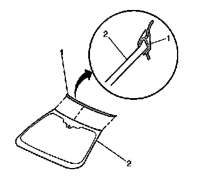

Windshield Upper Reveal Molding Replacement
WINDSHIELD UPPER REVEAL MOLDING REPLACEMENT
REMOVAL PROCEDURE
1. IMPORTANT: The windshield upper reveal molding requires removal of the windshield for proper installation.
Remove the windshield.

Remove the upper reveal molding (1) from the windshield (2) starting at the center and working outboard to both ends.
2. Remove the upper reveal molding from the windshield.
INSTALLATION PROCEDURE
1. Install the upper reveal molding (1) to the windshield (2).
2. Align the notch in the molding to the center mark on the upper paint band on the windshield.
3. Press the upper reveal molding on to the windshield starting at the center and working outboard to both sides.
4. Install the windshield.